H-7 广告牌（Billboard）
原标题：Billboards
▶ 原视频：https://youtu.be/_o29OOOarPY本集日语字幕轨暂时无法获取（限流），内容据画面内烧录的英文字幕 OCR 整理，时间点按画面字幕对齐。

速览
广告牌（Billboard）是永远正对镜头的平面物体，大多由两个多边形组成。《超级马力欧 64》中，沿坡滚下的铁球其实就是用广告牌做的：每一个都只是一张图，没有任何动画。炸弹王也这样用了广告牌：眼睛、王冠等用 3D 模型显示，下面的身体主体是广告牌。为什么在特效分类讲这个？因为粒子等类似特效一般都用广告牌显示。在《大乱斗 特别版》中把这个爆炸停下来、转动镜头，就能看出只是平面图——当然还需要火花等额外的点缀。2D 物体绘制成本相对低，而广告牌对于闪光这类无实体的特效再合适不过。顺便，《大乱斗》的食物道具传统上全是广告牌，所以镜头绕着它们转时看起来有点怪。也可以用「Y 轴广告牌」，即只靠绕 Y 轴的旋转让图面向镜头；但用错在特效上，有时会留下感觉太瘦的图。如今游戏画面都很精细，几乎分辨不出是否在用广告牌，对它的意识也因此变淡了，所以今天想提一下。
1. 什么是广告牌 0:04
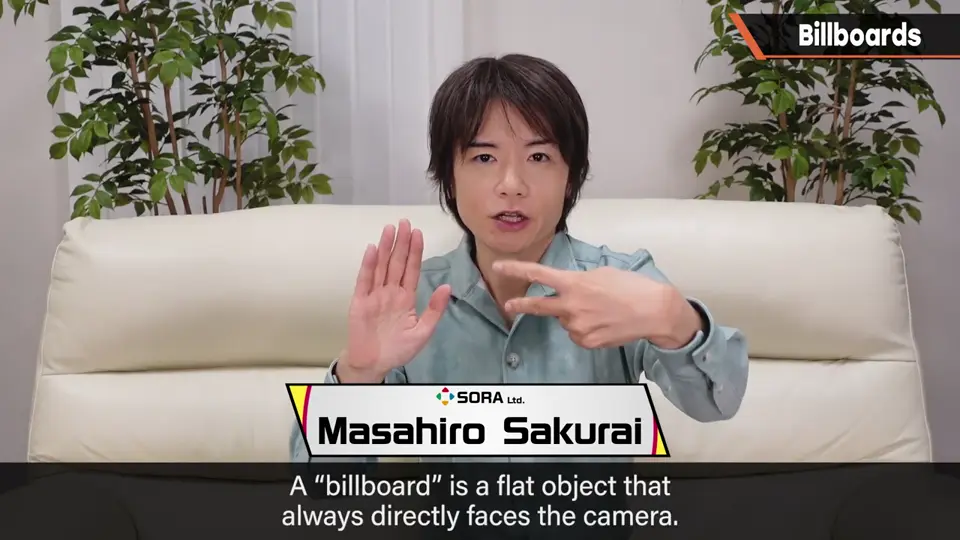
2. 《马力欧 64》的例子 0:15
《超级马力欧 64》中，沿坡滚下的铁球其实就是用广告牌做的：每一个都只是一张图，没有任何动画。
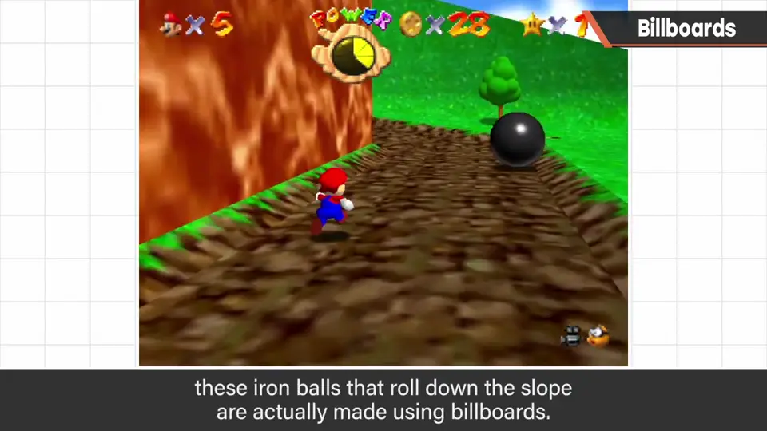
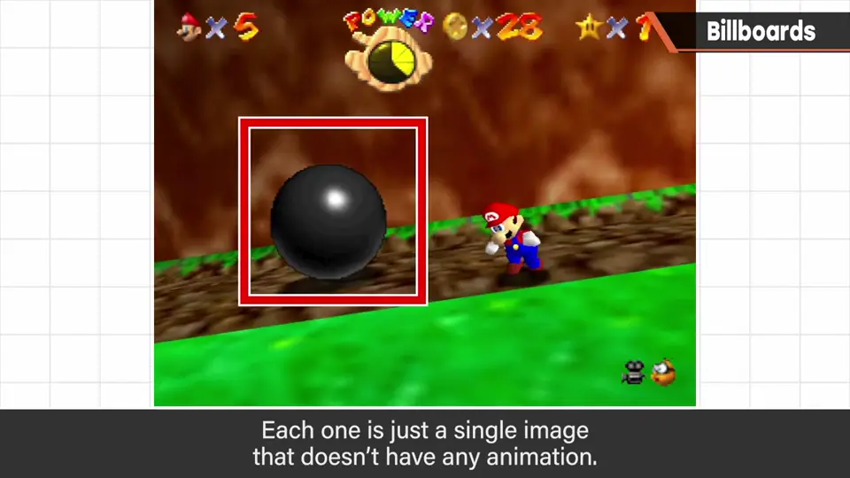
炸弹王也这样用了广告牌：眼睛、王冠等用 3D 模型显示，下面的身体主体是广告牌。
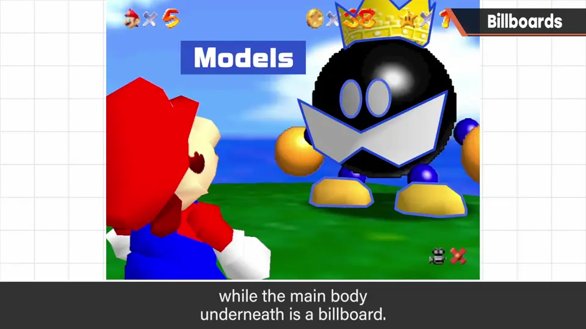
3. 特效与广告牌 0:48
为什么在特效分类讲这个？因为粒子等类似特效一般都用广告牌显示。
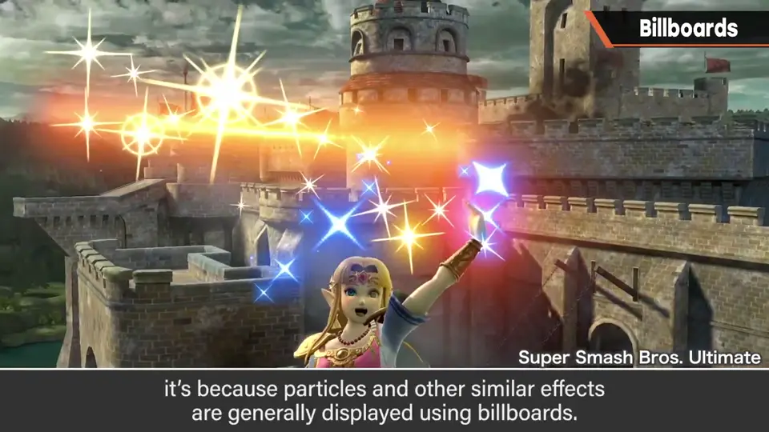
在《特别版》中把这个爆炸停下来、转动镜头，就能看出只是平面图——当然还需要火花等额外的点缀。
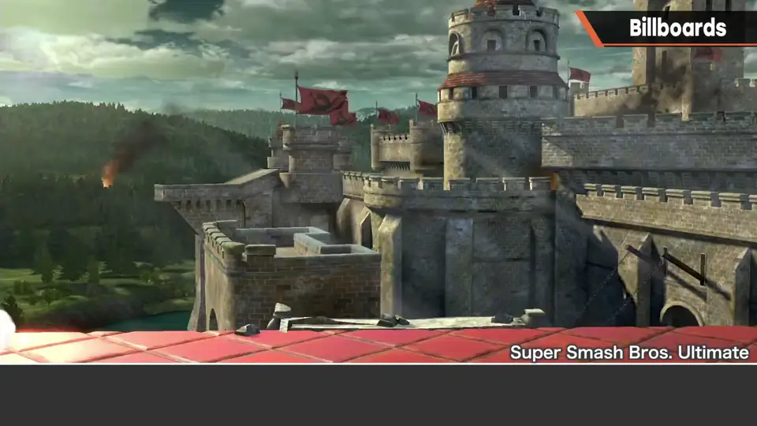
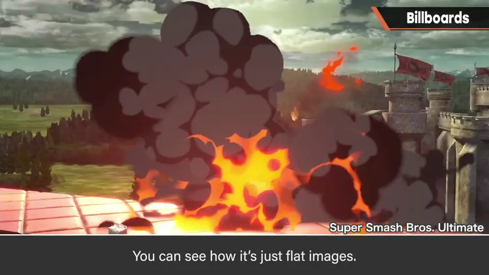
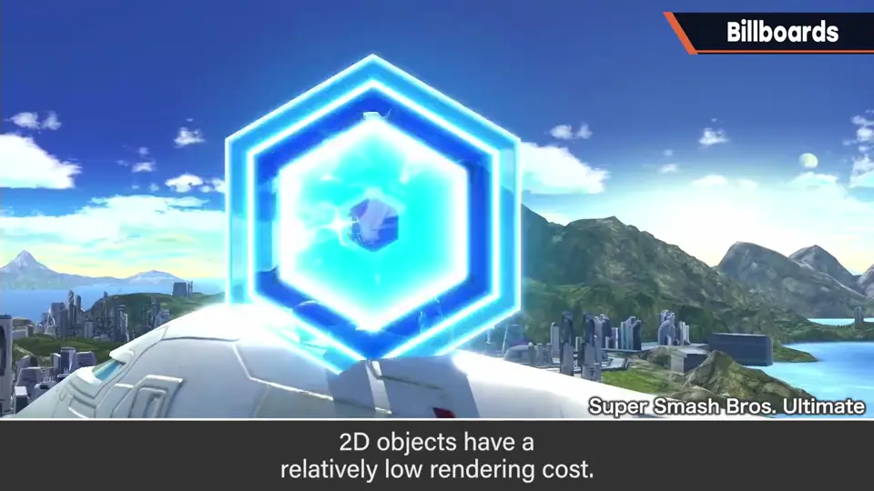
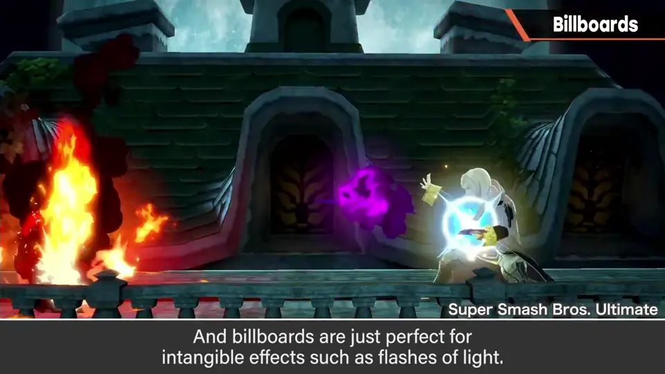
4. 食物与 Y 轴广告牌 1:21
顺便，《大乱斗》的食物道具传统上全是广告牌，所以镜头绕着它们转时看起来有点怪。
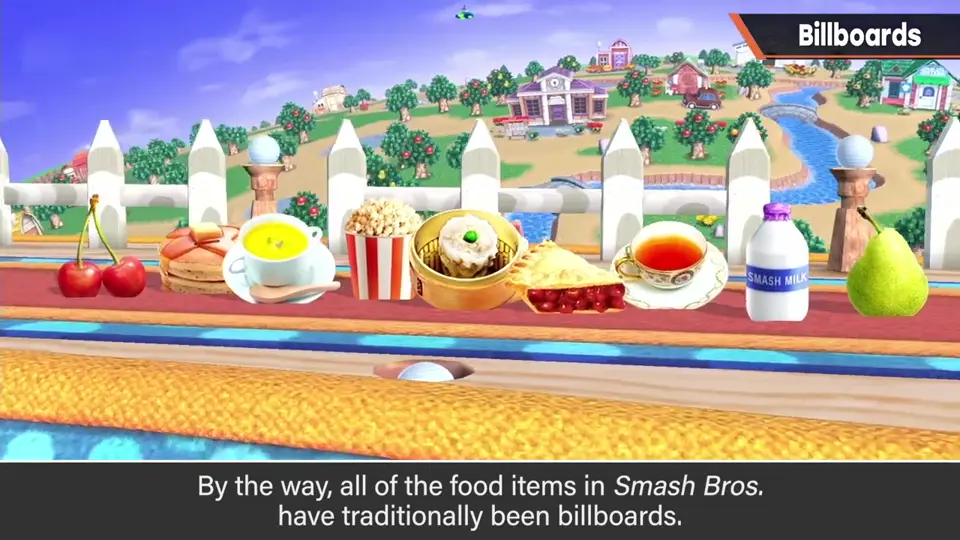
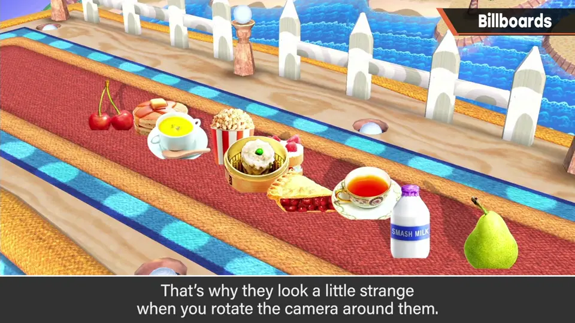
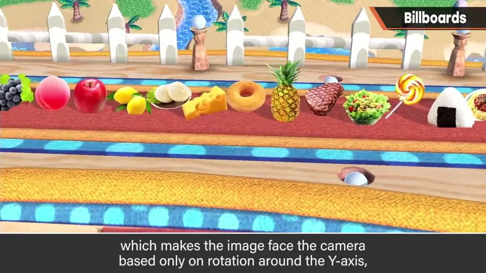
也可以用 Y 轴广告牌：只靠绕 Y 轴的旋转让图面向镜头。
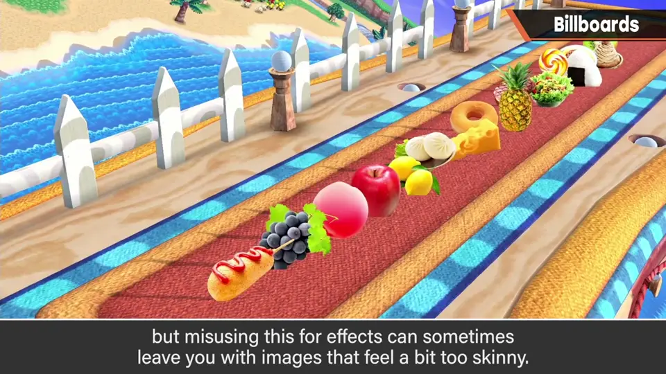
5. 意识变淡了 1:46
如今游戏画面都很精细，几乎分辨不出是否在用广告牌；对它的意识也因此变淡了，所以今天想提一下。
自测题
1. 什么是广告牌？
永远正对镜头的平面物体，大多由两个多边形组成。 0:05
2. 为什么特效常用广告牌？
2D 物体绘制成本低，适合闪光等无实体的特效。 1:10
3. Y 轴广告牌用于特效有什么风险？
只绕 Y 轴面向镜头，从某些角度看图会显得太瘦。 1:38